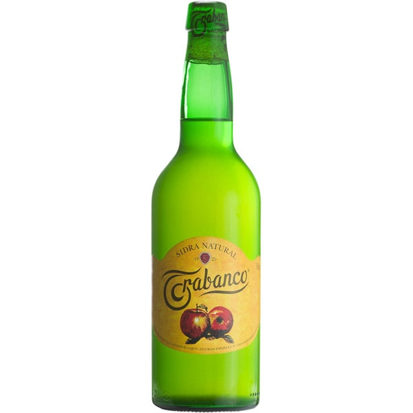

Nuestros productos
Tradición Asturiana
Sidra Premium

¡Déjate envolver por la rica historia de Asturias con nuestra Sidra Premium "Tradición Asturiana"! Elaborada con las mejores manzanas seleccionadas de nuestro propio huerto familiar, esta sidra ofrece una experiencia única de sabores equilibrados y aromas frescos. Desde la primera burbujeante copa hasta la última, cada sorbo te transportará a la cuna de la sidra asturiana. ¡Descubre el auténtico sabor de la tradición en cada botella!
Lienzo de Recuerdos
Botellas de Sidra

Crea tu propia historia con nuestras botellas de sidra vacías, el lienzo perfecto para tus momentos más memorables. Estas botellas, una vez albergaron nuestra exquisita sidra, ahora esperan ser llenadas con tus propias creaciones y recuerdos. Perfectas para personalizar y regalar, estas botellas vacías son el compañero ideal para celebrar y compartir tus momentos más especiales. ¡Transforma cada botella en una obra de arte única!
Eleva tu Experiencia
Vasos de Sidra

Experimenta la verdadera esencia de la sidra asturiana con nuestros vasos diseñados para realzar cada matiz de sabor. La forma única de estos vasos permite que los aromas se liberen, mientras que su diseño ergonómico te invita a disfrutar cada sorbo. Ya sea que estés degustando nuestra sidra o creando la tuya propia, estos vasos añaden un toque de elegancia a cada experiencia. ¡Eleva tu ritual de la sidra con nuestros vasos diseñados con pasión!
Tu Propio Llagar en Casa
Kit de Producción de Sidra Casera

Embárcate en una emocionante aventura de producción de sidra con nuestro Kit de Producción de Sidra Casera. Todo lo que necesitas para convertirte en el maestro cervecero de sidra en la comodidad de tu hogar. Con ingredientes de la más alta calidad y un sencillo paso a paso, este kit te guiará a través del proceso completo, desde la selección de las manzanas hasta el momento en que disfrutas tu primera sidra casera. ¡Descubre la alegría de crear y compartir tu sidra única con amigos y familiares!